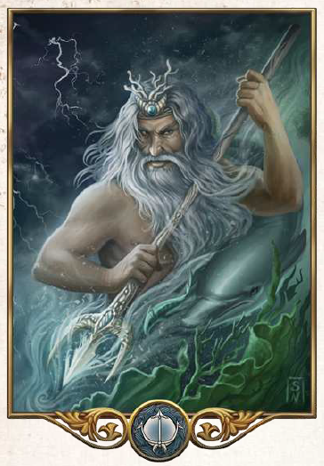

"Das Wasser lässt sich nicht formen oder zwingen. Es ist ewig und spendet allen Wesen Leben und Gedeihen."
Aspekte: Wasser, Meer, Wind, Seefahrt
Symbole/Wahrzeichen: Dreizack, Wellen und Wogen
Heiliges Tier: Delphin
Efferd ist der Gott des Meeres, der Gewässer und des Windes. Seine heiligen Tiere sind die Delphine, doch herrscht er über alle Kreaturen des Wassers und in seinem Gefolge tummeln sich auch Nixen, Necker oder Wassermänner. Angeblich ist er einer der ältesten Götter und er gilt als Herr der Wogen und Wellen, als launisch und manchmal geradezu unberechenbar. Besonders Fischer, Flussschiffer und Seefahrer verehren den herrn der Winde und hoffen auf deine Gnade. Aber auch in Regionen großer Trockenheit wird er als Herr des lebensspendenden Wassers verehrt.
Seine Priester sind für ihre Launenhaftigkeit bekannt. Sie sollen ihre Temperament nicht zügeln, ganz so, wie ihr Gott ihnen mal einen reichen Fang beschert, mal aber einen Sturm über die Meere peitschen lässt. Das Feuer meiden viele seine Diener und so werden Efferds Tempel oft von bläulichen Schein der Gwen-Petryl-Steine erhellt. Sein oberster Diener ist der Hüter des Zirkels, der im Haupttempel des Kultes in Bethana residiert. Dort setzten einst die ersten güldenländischen Siedler nach langer Überfahrt ihren Fuß auf aventurischen Boden.